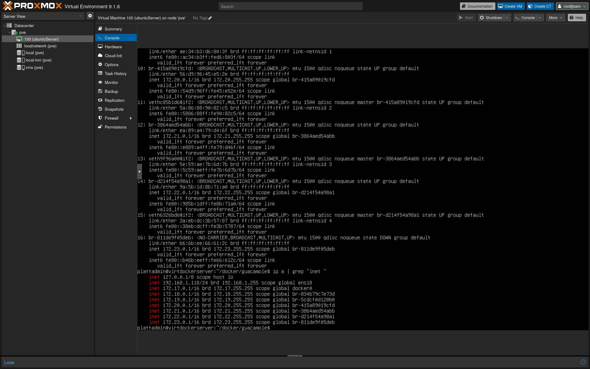

In this project, I set up a Proxmox server to create and manage virtual machines. Proxmox is an open-source virtualization platform that allows you to run multiple virtual machines on a single physical server. I installed Proxmox on a dedicated server and created several virtual machines to test different operating systems and applications. This project helped me learn about virtualization technology and how to manage virtual environments effectively.